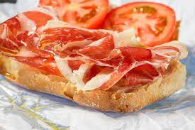

Tostada de jamón, aceite y tomate

Desayúno típico andaluz que consta simplemente de cuatro ingredientes. Rico y sano para arrancar la mañana.
Ingredientes
- Pan
- Jamón
- Aceite
- Tomate
- Sal (opcional)
Pasos
- Tostar el pan.
- Cortar tomate en rodajas o triturarlo.
- Poner aceite de oliva en la tostada.
- Añadir jamón y tomate.
- Si te gusta, se le puede añadir un toque de sal.